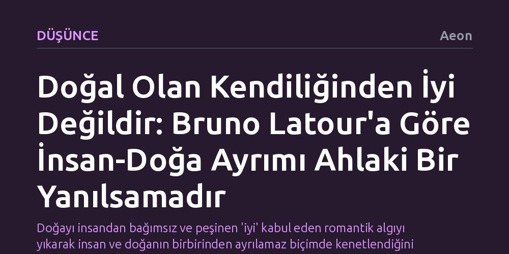

DUSUNCE · Aeon · 2026-10-20
Filozof Bruno Latour’a göre doğa ile insan yapımı arasındaki keskin sınır ontolojik bir gerçeklik değil, doğayı peşinen iyi sayan ahlaki bir tercihtir. Gerçekte bu iki alan bütünüyle iç içedir ve insan dışındaki varlıklar da kendi failliğine sahiptir.
Doğayı insandan bağımsız ve peşinen 'iyi' kabul eden romantik algıyı yıkarak insan ve doğanın birbirinden ayrılamaz biçimde kenetlendiğini gösterir.

Modern zihin dünyayı iki uzlaşmaz kutba bölmeye alışkındır: Bir yanda el değmemiş, saf 'doğa', diğer yanda ise insanın aklı ve eliyle şekillendirdiği 'yapay' dünya. Fransız düşünür Bruno Latour’a göre bu keskin ayrım bütünüyle yanıltıcıdır. Doğa, insan müdahalesinden ve yapaylıktan bağımsız, kendi başına yalıtılmış bir varoluşa sahip olamaz; yalnızca insanla ve insanın ürettikleriyle kurduğu ilişki ağları üzerinden anlam kazanır.
Dahası Latour, bu iki alan arasına kalın bir sınır çizdiğimizde ontolojik bir gerçeği saptamadığımızı, örtük bir ahlaki yargı ürettiğimizi belirtir. Doğal olanı peşinen 'iyi' ve masum, insan yapımı olanı ise 'kötü' veya yozlaşmış sayarız. Oysa bu ahlaki kutuplaşma, dünyayı anlamamızı kolaylaştırmaz; tam tersine şeylerin gerçekte nasıl birbiriyle iç içe geçtiğini ve birlikte işlediğini görmemizi engeller.
Barselona Çağdaş Kültür Merkezi (CCCB) tarafından üretilen 'A Vocabulary for the Future' serisi, Latour’un bu köklü eleştirisini soyut bir felsefi metin olmaktan çıkarıp somut bir görsel deneyime dönüştürüyor. Seride önde gelen düşünürlerin tek bir kavram üzerine geliştirdiği muhakemeler, sinemacıların özgün bakışlarıyla buluşturularak izleyicinin yerleşik kavramsal kalıpları yeniden sorgulaması amaçlanıyor.
Yönetmen Gerard Ortín Castellví’nin video çalışması, Latour’un tartıştığı insan-doğa yarılmasını çarpıcı biçimde görünür kılıyor. Görüntüler, doğal dünya ile insan dünyası arasındaki sınırın nasıl ufalandığını ve iki alanın varsayılandan çok daha derin bir biçimde birbirine dolaştığını gözler önüne seriyor.
Bu yapay ikiliğin ötesine geçmek, dünyayı yalnızca insanların eylemde bulunduğu pasif bir sahne olarak görme alışkanlığını terk etmeyi gerektirir. Latour’a göre yeryüzü, sadece insanın dönüştürdüğü nesnelerden ibaret değildir; insan dışındaki sayısız varlık da kendi eylemlilik gücüne ve dinamizmine sahiptir.
İnsan ve doğayı birbirine karşıt iki cephe gibi kurgulamak yerine aralarındaki dolanıklığı kabul etmek, hem ekolojik krizlere hem de teknolojik gelişmelere bakışımızı dönüştürür. Çözüm, doğayı romantik bir saflık yanılsamasıyla insandan tecrit etmekte değil; her varlığın ortak bir faillik ağı içinde yer aldığını kavrayabilmektedir.